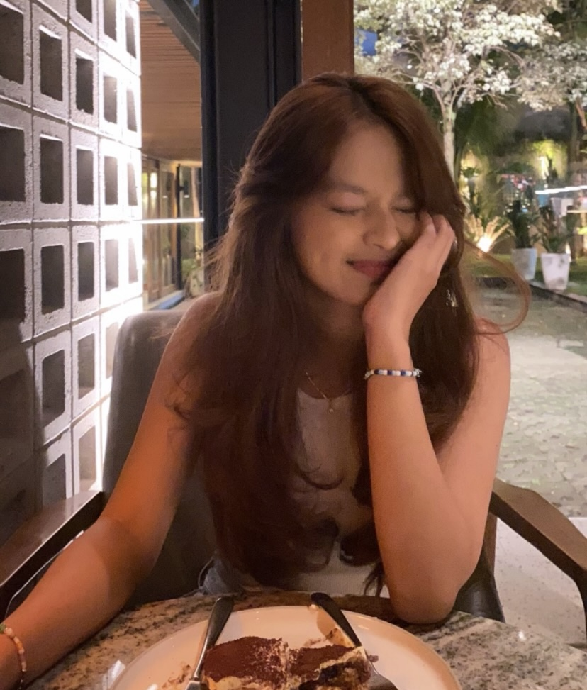
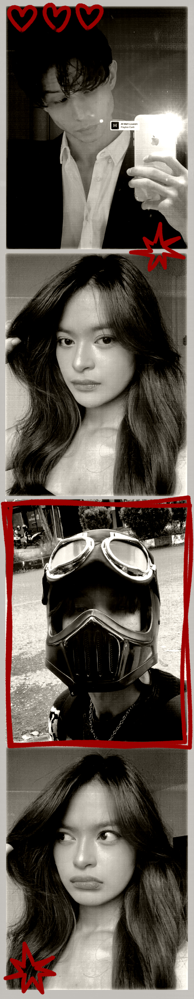
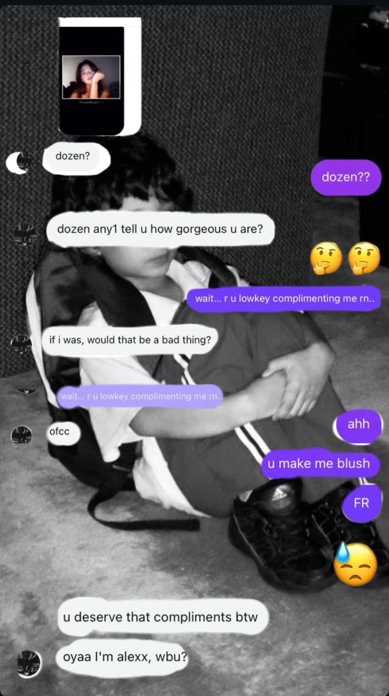

welcome to my little website ♡
this is a tiny archive i made for you 💗


i just wanted to say it’s been really nice getting to know you.
it hasn’t been that long, but talking to you already feels easy and
comfortable. i didn’t expect it, but our conversations just flow,
and i kinda like that. it feels like we’re on the same wavelength,
i’d honestly love to talk in person sometime soon.
i feel like it would be even better irl. let’s actually make that happen.
and yeapp, thank u so much to aji wkwk,
that was such a random connection but i’m really glad it happened. 💭
also, the photo on here is kinda cringe......
but the chat screenshot is our first conversation.
i was actually so happy when you made the first move...hihi
okay soooo that’s it for now,
but i’ll make a better version of this when we have more memories together <3
22 feb 2026